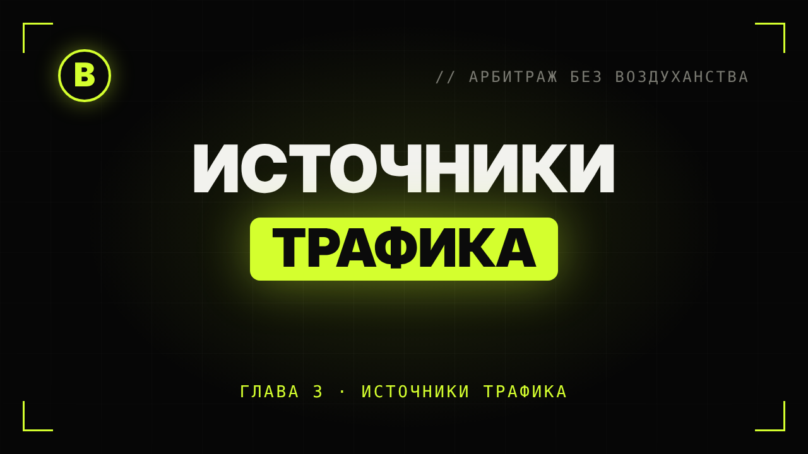

// глава 3
Источники трафика

Мой источник: Facebook
В примерах курса я беру Facebook. Это самая глобальная соцсеть: в ней очень много пользователей и очень разная аудитория, поэтому под любое ГЕО и любой оффер можно найти своих людей.
Главный минус
Facebook — очень штормящая платформа. На ней много банов, реджектов и всего подобного.
Запомни
Не всё зависит от тебя. Иногда результат зависит просто от «настроения» Facebook. К этому нужно быть готовым с первого дня.
Если термины незнакомы
Бан — блокировка аккаунта или кабинета. Реджект — отклонение объявления на модерации.
Новые главы выходят в канале. Подпишись, чтобы не пропустить.
Подписаться на «Воздухан»